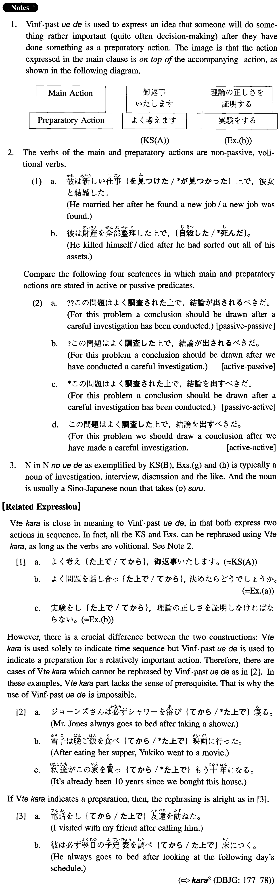

（の）上で (I. 547)
- (ksa).
- よく考えた上で御返事いたします。
- I will reply upon careful consideration.
- (ksb).
- 話し合いの上で結論を出したいと思います。
- I would like to draw a conclusion after discussion.
- (a).
- よく問題を話し合った上で決めたらどうでしょうか。
- Why don't we decide after discussing the matter?
- (b).
- 実験をした上で、理論の正しさを証明しなければならない。
- We have to prove the correctness of the theory after conducting an experiment.
- (c).
- 日本文学のスミス先生と相談した上で、修士論文の題目を決めました。
- I decided the topic of my M.A. thesis after consulting with Japanese literature Professor Smith.
- (d).
- 彼女とはお見合いをして、一年間交際した上で、結婚に踏み切りました。
- I decided to get married after meeting her through an arranged match and dating her for one year.
- (e).
- 日本の生活は高くつくと知った上で、日本へ留学した。
- I went to Japan to study, knowing that life is expensive there.
- (f).
- 十冊ぐらい本を読んだ上で、学期末のレポートを書き上げた。
- I finished writing my term paper after having read about 10 books.
- (g).
- 面談の上で、採否を決めます。
- After an interview we will decide whether or not to approve the adoption.
- (h).
- 二人は協議の上で離婚した。
- The two got divorced after reaching an agreement.
